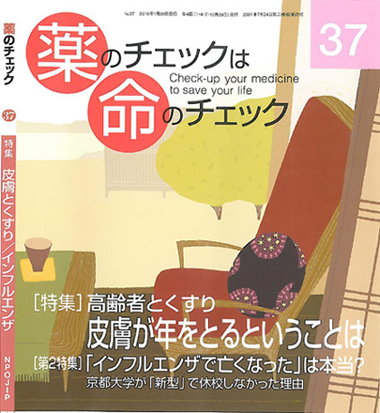

連日のように「新型インフルエンザで死亡」とニュースで流されています。こんなに報道が必要なほど重大なのでしょうか？ 本当にインフルエンザで死亡したのでしょうか？ タミフルや解熱剤は関係ないのでしょうか？ しっかりと検討してみましょう。
『薬のチェックは命のチェック』37号（2010年１月発売予定、2009年11月30日校了）では、このような書き出しで、今回の2009A/H1N1インフルエンザ（09Aインフルエンザ）、いわゆる「新型」インフルエンザによる死亡例の分析結果を掲載しています。
特に速報の必要度の高いこの記事について、インターネット上で速報いたします(以下は分析結果本文のうちのタミフルとの関連に関する部分の抜粋：一部やや詳しくしてあります)。
タミフルとの関連に関する分析は、厚労省がホームページ上で公表している「新型インフルエンザに関する報道発表資料」の「新型インフルエンザ感染した患者の死亡ついて」の情報を用いたものです。
2009年11月27日までに公表された死亡者74人について、タミフルがどの程度に関係していたかを疫学的な手法を用いて推計しました（なおその後公表された死亡例を考慮しても結論は変わりません）。
まず、死亡にいたる経過を検討すると、大きく２つのタイプがあることがわかりました。
１つは、急に呼吸異常を呈したり、意識障害に引き続き死亡した場合や、あるいは、心肺停止や死亡状態で発見されたケースです。
２つ目は、急速だけれども連続して悪化が進行したケースです。
いずれの場合も多くは悪化後は人工呼吸器などが必要となり、最終的に亡くなっていました。前者を「突然型」（速報No136、137で述べた5歳の子が典型）、後者を「進行型」に分類しました。
受診する前に急変したり突然死された場合もありますが、その場合も２つの型に分けて検討しました。
突然型が54人、進行型が20人でした。突然型54人のうち、受診後に突然急変した人が44人、受診前が10人でした。また、進行型の20人のうち受診後に進行した人が13人、受診前に進行していた人が7人でした。
悪化する前にタミフルを服用していた割合は全体では、突然型が54人中36人(67％)、進行型では20人中3人(15％)と著しい違いがありました。この数字を用いて疫学的に検討をすると、タミフルを使うと、進行型で死亡するより突然死する危険が11倍高まると計算できます（オッズ比11.33、95%信頼区間2.68-85.91、ｐ<0.0001）（なお、タミフルが処方された場合は、特別服用していなかったとの断りが無い限りは、タミフルを服用したものと扱いました）。
進行型では、悪化前の1日以内にタミフルを服用した人はいませんでしたが、突然型では、19人（約3分の１）が、突然悪化する前の半日以内(大部分が数時間以内)にタミフルを服用していました。1日以内が27人（半数）、2日以内は32人（約6割）でした。進行型では1日以内の服用はなく、2日以内の服用者が1人、2日以降の服用者が2人いただけでした。
この数字を用いると、タミフルを服用した場合、進行型になるより、1日以内に突然死する危険度が約40倍(オッズ比41.00、95%信頼区間4.27-無限大)、2日以内に突然死する危険度が約30倍高まると計算できました(オッズ比27.64、95%信頼区間3.70-1183)。
受診前に急変した人を除いて推計すると、さらに関連は強くなりました。また、詳しい検討は割愛しますが、性や年齢、危険因子の有無で調整しても、この危険度は、ほとんど変わりありませんでした。ともかく、突然の呼吸停止や死亡とタミフル使用との間には、極めて強い関連が認められたのです。
厚労省担当者も「否定できない」とした５歳の子が典型的なケースですが、インフルエンザにかかってタミフル服用後に突然死した場合、タミフルがどの程度関与していたかを示すために「寄与危険度」という疫学の指標を用いて表しました。受診後にタミフルを服用して突然死した場合、その93％はタミフルが関係したと推定できました。タミフルを服用していた36人中、33人はタミフルが原因であった可能性があり、受診後死亡した人の半数以上となります。
進行型の大部分（約7割）が多臓器不全型を起こしていたこと、進行型で亡くなった13人の中に10歳未満の子はいなかったことも注目すべきと思いました。その理由については、本文をぜひ参照ください。
また、受診後タミフルが使用され突然の急変後に死亡した代表例をリストで示しました。
そのほか、09Aインフルエンザは結局、軽症だったことについても、データを示して解説しましたので、合わせて本文でぜひご覧ください。
また、まもなくご案内しますが、『薬のチェックは命のチェック』37号では以下の内容をお届けします。乞う ご期待！
